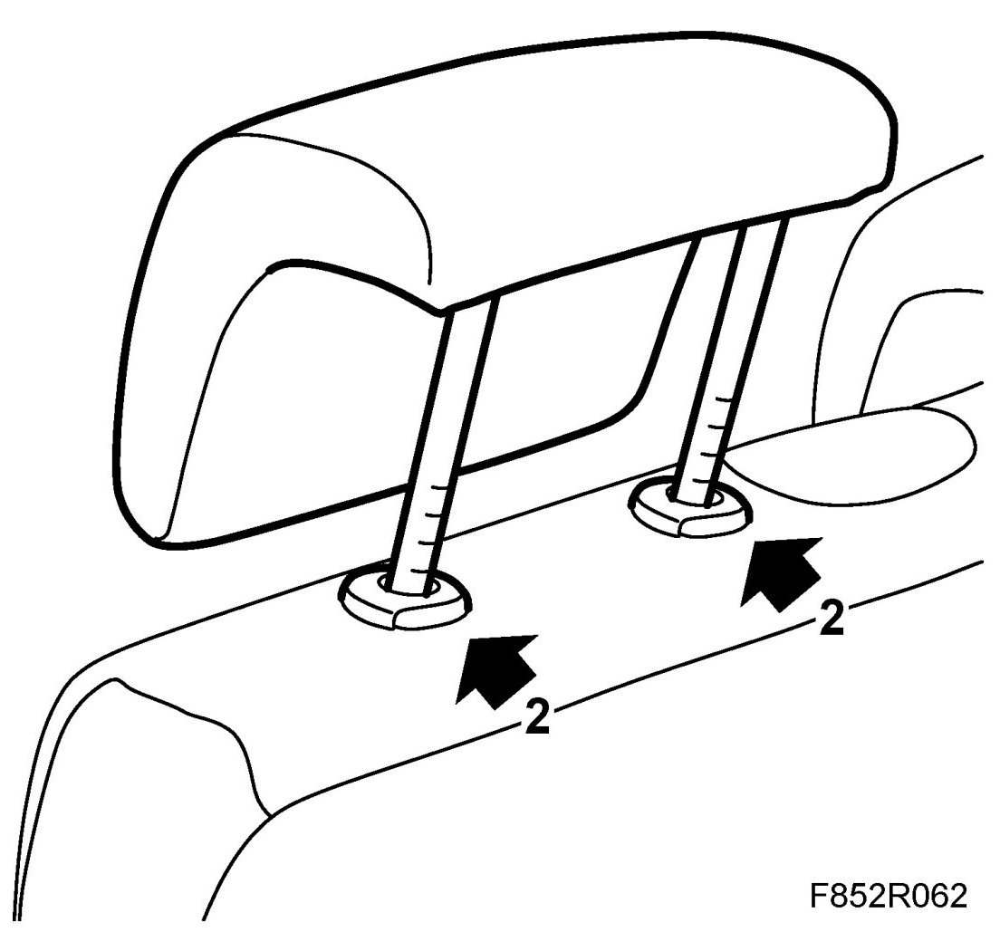

Head Rest: Service and Repair
Head Restraint
Removing
1. Pull the head restraint up as far as possible.
2. Remove the head restraint by pressing the catches while pulling out the head restraint.

Fitting
1. Insert the head restraint and push it all the way down. Make sire the head restraint's legs are kept parallel.
2. Check the function of the catches.